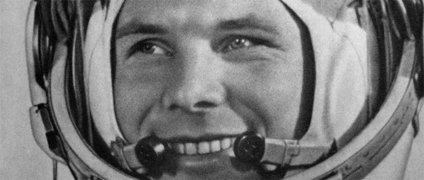

Le premier homme dans l'espace
Le 12 avril 1961, le cosmonaute soviétique Youri Gagarine (27 ans) accomplit le tour de la Terre en 108 minutes à bord d'une fusée Vostok 1, à 327 km d'altitude. Le module, construit en aluminium, est une sphère de 2,3 mètres de diamètre, avec un volume habitable de seulement 1,6 m3. Youri Gagarine, premier homme à naviguer dans l'espace, n'a rien à faire dans son habitacle que de laisser les techniciens de la base de Baïkonour guider son vaisseau. Pour le retour sur terre, quelque part en Sibérie, il s'éjecte quelques minutes avant l'atterrissage et c'est en parachute qu'il termine son périple. Quatre ans après le lancement d'un premier satellite, les Soviétiques présentent son exploit comme la preuve de la supériorité de leur système politique. Le président américain John Kennedy relève le défi et, le 25 mai 1961, dans un discours retentissant, promet qu'un Américain marchera sur la lune avant la fin de la décennie. Youri Gagarine n'a pas eu l'amertume d'assister à cette revanche. Il a trouvé la mort dans un accident d'avion, au cours d'une mission d'entraînement, le 27 mars 1968, à 34 ans.
 Source : Herodote
Plan du site | Contact | Site réalisé par Mathieu Morainville.